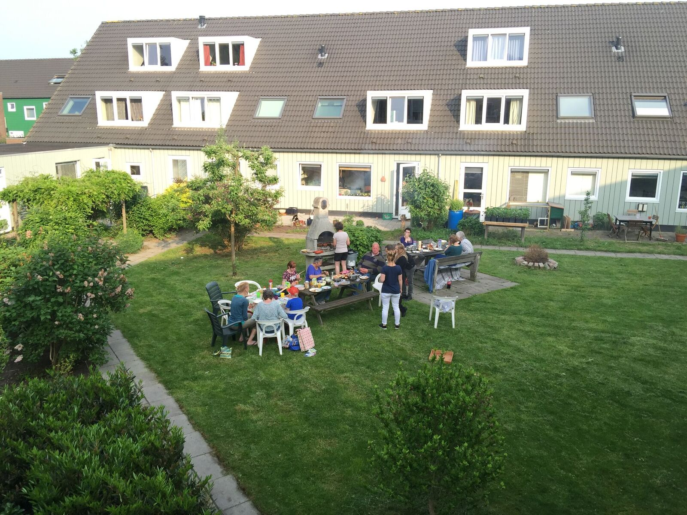
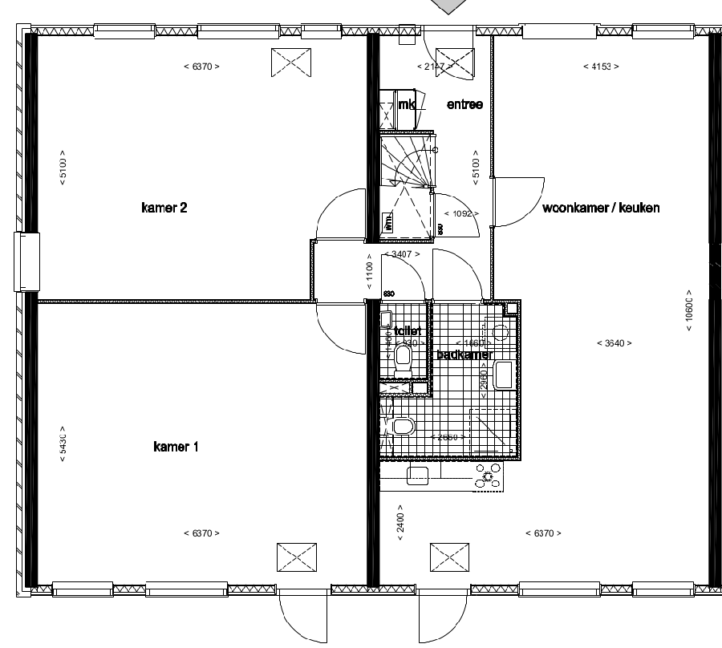
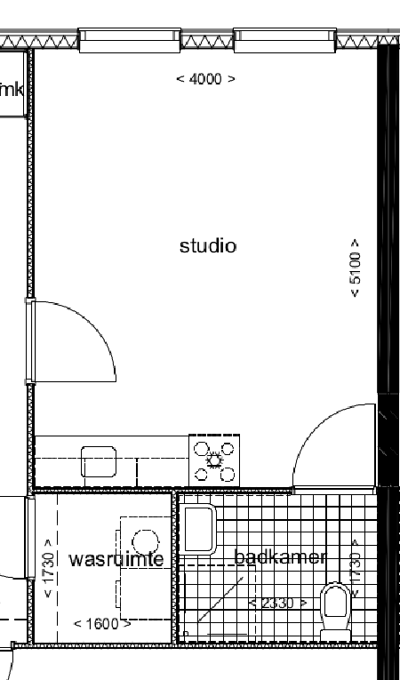
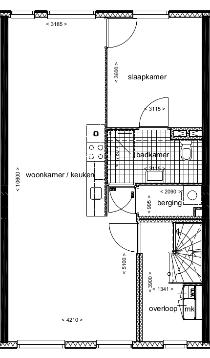
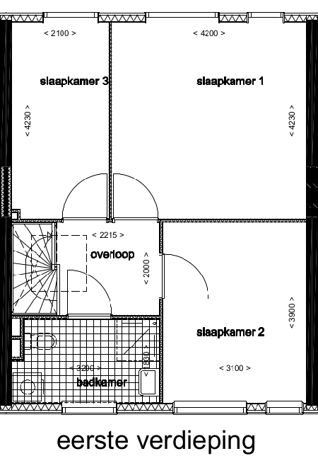
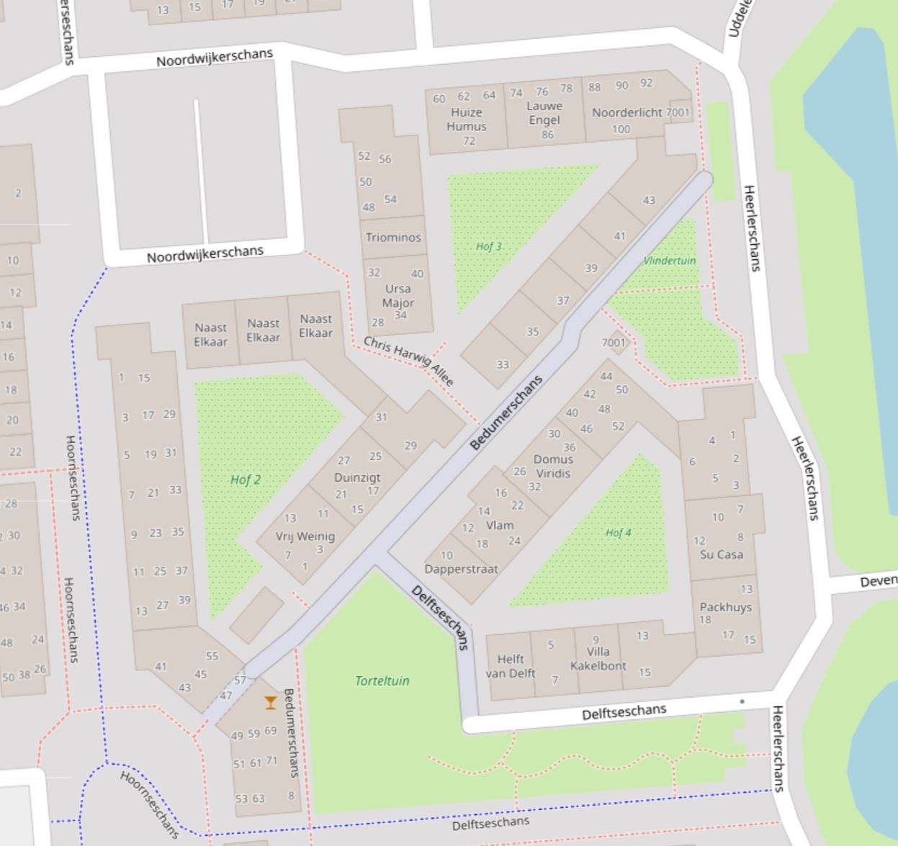

Welkom bij Gemeenschappelijk Wonen in Nieuwegein!

Het GW is begin jaren tachtig opgezet en in 2010 grondig gerenoveerd. In de nieuwe opzet zijn er vier verschillende woonvormen: woongroepen, appartementen met gedeelde faciliteiten, zelfstandige woningen, en eengezinswoningen. De woningen zijn gegroepeerd rondom drie gemeenschappelijke hoven. Het is nadrukkelijk géén beschermd wonen. Je bent zelf verantwoordelijk.
Vrijwel alle woningen zijn huurwoningen, eigendom van woningcorporatie Jutphaas Wonen.
Wonen in het GW, daar kies je bewust voor. GW-bewoners zijn betrokken met elkaar. Door het GW lopen zonder een praatje te maken is bijna niet mogelijk. Zin in gezelschap? Een oproepje is voldoende om mensen te verzamelen voor een spelletjesavond of een partijtje volleybal.
Wonen in Nieuwegein, kan dat leuk zijn? Ja zeker! Behalve de twee oude dorpskernen Jutphaas en Vreeswijk kent Nieuwegein ook het Gemeenschappelijk Wonen-Project. Een woonproject waar je je buren kent en waar gezamenlijk activiteiten worden ondernomen.
Gemeenschappelijk Wonen Nieuwegein is ook te vinden op Facebook, Instagram en YouTube.
Waarom Gemeenschappelijk Wonen
Gemeenschappelijk wonen doe je niet zomaar, daar kies je bewust voor. Wat houdt het in, is het iets voor jou, en wat moet je doen als je hier zou willen wonen? Het GW stelt zich graag aan je voor.
Bewust kiezen:
- Je bent alleenstaand, maar wilt niet iedere dag in een leeg huis thuiskomen. Je zoekt de gezelligheid van een woongroep.
- Je hebt een hekel aan de anonimiteit van de gemiddelde nieuwbouwwijk of grote stad. Je zoekt een omgeving waar je terecht kunt bij allerlei commissies en activiteiten waardoor je in no-time veel nieuwe mensen leert kennen.
- Je wilt graag milieu- en energievriendelijke leven. Voorzieningen delen spaart het milieu en in het GW kun je bovendien medestanders vinden.
Zomaar wat redenen om te kiezen voor het GW. Wonen in het GW-project betekent kiezen voor een andere manier van wonen. Natuurlijk hoef je niet alles samen te doen met je huisgenoten of mede GW-ers. Je hebt je eigen leven en je eigen privé ruimte. Maar daarnaast besteed je bewust tijd en energie aan het grotere geheel: je woongroep, je vereniging.
- Iedere bewoner is lid van het GW. Via de huur betaal je de maandelijkse verenigingsbijdrage van 20 euro. Hiermee betalen we de vaste lasten en de huur van de Bedoeling. De verenigingscontributie zit ook in deze bijdrage en is 15 euro per jaar.
- Je bent bereid om per maand enkele uren van je tijd in de vereniging te steken. Dat kan op allerlei manieren: van bestuurslid worden tot af en toe een optreden van een bandje organiseren.
- In woongroepen heb je flexibiliteit en verantwoordelijkheidsbesef nodig. Je hebt veel te maken met je huisgenoten en daar zal je je voor moeten inzetten. In ieder geval deel je de tuin, de keuken en de sanitaire ruimtes. Er moeten afspraken gemaakt worden over gebruik, schoonmaak en onderhoud van de groepsruimtes en over de manier waarop je als groep het huishouden wilt voeren.
- Als GW-er ben je op gezette tijden (volgens rooster) verantwoordelijk voor het schoonmaken van de gemeenschappelijke zaal en bar.
Woonvormen binnen het GW
In het GW zijn vier verschillende woonvormen. Hieronder een korte toelichting. Alle bewoners van het GW zijn onderdeel van een hof en lid van de vereniging.
Noot: de plattegronden dienen om een indruk te geven van de grootte en indeling van de verschillende woonvormen. Individuele woningen kunnen afwijken.
Woongroep

Veel GW’ers komen binnen via een woongroep. In deze huizen woon je samen met vijf anderen. Je hebt een ruime woon-/slaapkamer (30-40 m2) en daarnaast een aantal gezamenlijke ruimtes, zoals een woonkamer met keuken, drie badkamers, een zolder, en een voor- en achtertuin. Ook diverse woonbelastingen die de gemeente heft en de energie rekening (electra, water en warmteverbruik worden gedeeld. Iedere bewoner heeft een eigen huisnummer en dus ook recht op huurtoeslag. De woongroepen hebben allemaal hun eigen profiel en kiezen zelf nieuwe bewoners wanneer er woonruimte vrijkomt; hiervoor kunnen ze gebruik maken van hun eigen kanalen en van de wachtlijst voor nieuwe GW’ers.
Centraal Wonen


Centraal Wonen biedt meer zelfstandigheid. Hier deel je een gemeenschappelijke ruimte en een washok op de begane-grond en daarnaast de voor- en achtertuin. Je hebt je eigen woonkamer/keuken, badkamer, en een of meerdere slaapkamers (in de appartementen). Centraal Wonen is een mengvorm tussen de woongroepen en de zelfstandige woningen. Sommige CW-huizen kiezen zelf hun nieuwe bewoners; bij andere huizen gaat dit via interne doorstroom en de wachtlijsten voor nieuwe GW’ers.
Elk CW-huis heeft op de begane grond ook een zogenaamde studio. Dit is een éénkamerwoning met eigen badkamer en keuken. Deze zijn vooral geschikt voor starters en studenten.
Zelfstandig Wonen

Bij Zelfstandig Wonen heb je alle voorzieningen ‘voor jezelf’: een woonkamer/keuken, badkamer, slaapkamer(s) en soms een tuintje op de begane grond. Dit zijn dus ‘reguliere’ appartementen die wel net als de andere woonvormen deel uitmaken van het gemeenschappelijke project. Nieuwe bewoners worden gevonden middels interne doorstroom en de externe wachtlijsten van het GW.
Eensgezingswoningen

In het GW zijn zes eengezinswoningen. Elke eengezinswoning heeft op de begane grond een woonkamer/keuken en voor- en achtertuin, en op de eerste verdieping een aantal slaapkamers en een badkamer. De eengezinswoningen zijn nadrukkelijk bedoeld voor ouders met kinderen; ze hebben tijdens de renovatie vorm gekregen zodat ook gezinnen die een eigen plekje willen in het GW kunnen blijven wonen. Over het algemeen worden nieuwe bewoners dan ook gevonden middels doorstroom binnen het GW.
Omgeving van het GW
Het GW heeft alles binnen handbereik. De supermarkt grenst aan het GW; de sneltram naar Utrecht is op 3 minuten lopen afstand, evenals het grote park midden in Nieuwegein. Op weg daar naartoe passeer je een aantal winkels waaronder een snackbar, pizzeria en kapper.
Met de fiets ben je vanaf het GW binnen tien minuten in het centrum van Nieuwegein, of bij het zwembad of één van de sportscholen in de omgeving.

Organisatie
Het GW is een vereniging. Dat betekent dat we een bestuur hebben en een paar keer per jaar een algemene ledenvergadering houden. De leden kunnen zich dan uitspreken over de begroting, het beleid en de ontwikkelingen in het project. Als nieuwe bewoner word je lid van de vereniging, dan heb je stemrecht, recht om gebruik te maken van de Bedoeling (keuken, kroeg en/of zaal) en toegang tot de activiteiten in het project.
We vinden het belangrijk dat mensen bewust kiezen voor deze manier van leven, en actief willen worden om het project draaiende te houden. Dit kan bijvoorbeeld door lid te worden van een commissie, zoals:
Commissie Projectvoorzieningen
Houdt zich bezig met reserveringen, inkopen, beheer en onderhoud van de Bedoeling.
Activiteiten Commissie
Organiseert feesten en andere activiteiten, van vrijwilligersuitje tot zeskampen.
Woonbeleid
Beheert de wachtlijsten en zorgt dat woningtoewijzingen goed verlopen.
Groengroep
Maakt plannen voor het gemeenschappelijke groen en organiseert groendagen.
Website
Verzorgt de website en de mailing-lijsten.
Filmcommissie
Zorgt dat er elke zaterdagavond weer een interessante film te zien is in onze filmzaal.
Bestuur
Een groepje bewoners dat naast de wettelijke taken van een vereniging, zoals het voorbereiden, houden en terugkoppelen van algemene ledenvergaderingen naar leden, het belangrijk vind om buren te hebben die ook bewust voor deze manier van leven hebben gekozen en willen bijdragen aan, en waar mogelijk verbeteren van, deze fijne woongemeenschap.
Bewoners
Behalve de commissies zijn er ook regelmatig andere initiatieven van GW’ers. Er is bijvoorbeeld een wekelijks wandelgroepje, yogales, een theatercursus, en een spelletjesclubje. Wie zelf een idee heeft kan zo wat mensen vragen of een mailtje rondsturen om een nieuwe activiteit te organiseren, al dan niet in de gezamenlijke kroeg/filmzaal De Bedoeling, die door alle GW’ers gebruikt kan worden.
Er wordt gewerkt aan meer nieuws... :D
Inschrijven
Wil je, je inschrijven bij het Gemeenschappelijk Wonen in Nieuwegein, download dan het inschrijvingsformulier en stuur dit op naar woonbeleidgw@gmail.com. We nemen daarna contact met je op.
Voor het toewijzen van huurwoningen door coöperaties zijn er regels gesteld door het ministerie van Binnenlandse zaken “Passend toewijzen van woningen”. Informatie hierover kan je vinden op internet.
Privacybeleid
Het bestuur van het GW is verplicht om zaken rondom wetgeving bescherming persoonsgegevens goed te regelen en u te informeren wat er met uw gegevens gebeurt.
Externe kandidaten
Bij inschrijving vult u een profielschets in. Hier in staan persoonlijke gegevens onder andere contactgegevens, geboortedatum en uw woonwensen.
- Indien uw inschrijving geaccepteerd wordt, komt de volgende vermelding erbij: ‘Ga discreet met deze informatie om. Deze is alleen bedoeld voor het zoeken naar een nieuwe bewoner en moet nadien verwijderd worden’.
- Indien uw inschrijving niet geaccepteerd wordt, wordt er contact met u opgenomen en worden uw gegevens verwijderd.
De profielen worden door de commissie woonbeleid bewaard in een dropbox, waar alleen leden die direct met mutaties te maken toegang toe hebben. Op het afgeschermde deel van de website (leden), staan uw naam en geboortedatum vermeld.
Als een woongroep of centraal wonen woningen met coöptatie nieuwe bewoners zoekt, kijken zij op het afgesloten deel van de website naar de ‘wachtlijst kandidaten’ en kunnen zij de door u ingevulde profielschets bij woonbeleid opvragen. Deze ontvangen de groepen per mail.
Als u als nieuwe bewoner geaccepteerd wordt, worden uw gegevens verwijderd. Als u onverhoopt niet als nieuwe bewoner geaccepteerd wordt, zal jaarlijks contact met u opgenomen worden of u nog interesse heeft in een woning binnen het GW project. Zolang u dit bevestigt blijven uw gegevens bewaard.
Interne kandidaten
Interne kandidaten vullen een eenvoudige profielschets in voor de intake. Bij een positief advies wordt deze na de intake verwijderd. Bij afwijzing kan het profiel op verzoek van de kandidaat bewaard worden en kan bij een her evaluatie opnieuw bekeken worden. Op het afgesloten deel van de website onder leden, ‘wachtlijst kandidaten’ worden de namen en woonwensen vermeld. Zoekende groepen kunnen jullie benaderen.
Bewoners
Voor bewoners geldt dat hun contactgegevens op het afgeschermde gedeelte van de website vermeld worden en dat u op de mailinglijst leden, iedereen en prikbord staat. Indien u dit niet wenst kunt u zich voor de iedereen lijst en het prikbord afmelden bij de Webcie. De leden mailinglijst is verplicht omdat die bedoeld is voor de mededelingen van het bestuur en de commissies.
leden
Deze pagina is nog in de maak
naar leden pagina